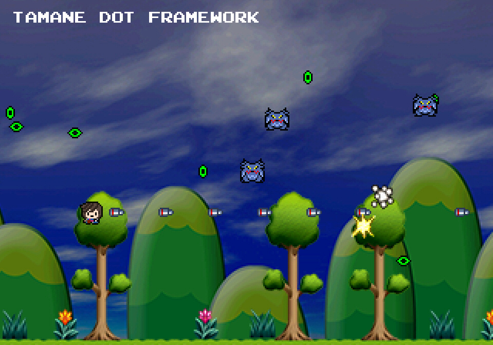
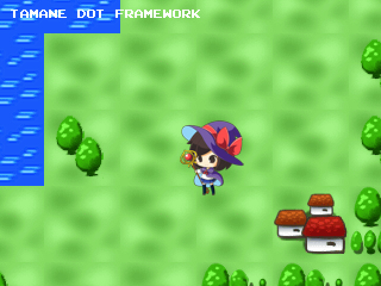

HSP : Hot Soup Processor ver3.7 / onion software 2022-(c)
Tamane Dot Framework (β)

Introduction
The "Tamane Dot Framework" is a set of dot-picture HSP3 official materials and libraries that can be used on HSP3Dish.
With a simple instruction set specialized for games and an all-in-one material package, you can easily start creating retro-style original games.
The created games can be released not only on Windows but also on the Web, Raspberry Pi, Linux, Android, iOS, etc.
Tamane is the official mascot character of HSP3. 2D materials and 3D materials have been provided before. In addition, there are sample games that can be easily played in a web browser, so be sure to check them out.

The scripts included in the archive can be used with Hot Soup Processor (HSP3). Image and sound materials can be freely incorporated into your own software.
Material Data Details
Contains 2D materials based on the HSP official character "Tamane".
The "tamane16.png" file is the actual image data.
Files in bmp format and png format are available. Normally, use the png format, which includes an alpha channel value that is transparent in HSP3Dish.

The image size is 128 x 128 dots, with 16 x 16 dot materials arranged in 8 patterns horizontally and 8 patterns vertically.
The material includes picture materials that can be used in games, such as Tamane-chan, monsters, items, and explosion marks, and can be used in various situations depending on the idea.
The "tamane16.png" file can be freely used not only in HSP3 but also in other programming environments.
How to Use Modules
The "Tamane Dot Framework" is a module that can be used from HSP3.6 onwards.
Based on HSP3Dish and standard sprites, it summarizes general-purpose processing, effects, joystick support, etc. used in games.
Copy the following files included in the archive to the common folder below the HSP3 installation folder, or place them in the same folder as the script to be executed.
dotfw.as Dot framework body mod_res.as Image resource manager
A command help file is included. By copying the following file to the hsphelp folder below the HSP3 installation folder, you can display help by pressing the [F1] key.
dotfw.hs Help file
Basic Script
When using the Tamane Dot Framework, simply add
#include "dotfw.as"
to the first line.
For example, by adding the following 6 lines, all processes such as basic screen initialization, player display, key and joystick operation, and bullet firing are performed.
#include "dotfw.as" df_config "fc Z300 star" df_reset df_addplayer *main df_update goto *main
Of course, depending on the user's description, you can add unique processing such as special movements and actions. You can also use all commands related to HSP3Dish and standard sprites.
You can perform a test display by executing the script of the included sample "fwtest??.hsp" on the HSP script editor.
Please use it as a reference when using it.

Screen Initialization
When using the Tamane Dot Framework, you must first perform the settings using the df_config command and the initialization using the df_reset command.
With the df_config command, you can configure the dot framework using tag strings.
By specifying tag strings separated by spaces, you can perform all the necessary settings collectively.
df_config "X320 Y240 Z300 star" df_reset
In the above example, the setting is to display the screen at (320 x 240) and zoomed in 300% (3x in both vertical and horizontal directions). By adding the "star" tag, you can have stars flow in the background. The order in which tag strings are written does not matter.
df_config "fc Z300" df_reset
In the above example, the tag "fc" indicating the Family Computer is used.
In this case, it is initialized as (256 x 224) and zoomed in 300% (3x in both vertical and horizontal directions, slightly horizontally long dots).
In this way, you can specify the specifications of typical retro game consoles and personal computers as presets using tags. (It only reproduces typical resolutions and does not reproduce display methods or the number of colors).
You can specify the following keywords for presets.
Tag String Content --------------------------------------------------------------- X??? ??? = Set the screen width Y??? ??? = Set the screen height Z??? ??? = Set the dot zoom value (%) A??? ??? = Set the dot aspect ratio (%) F??? ??? = Set the frame rate (fps) K??? ??? = Set the rapid fire interval P??? ??? = Set the continuous input key (0-3) V??? ??? = Set the virtual pad option value fullscr Display in full screen star Display stars in the background afont Select 8dot font type A bfont Select 8dot font type B cfont Select 8dot font type C vpad Display virtual pad
You can use the following keywords for tags that specify the screen resolution.
Tag String Content --------------------------------------------------------------- fc Family Computer (256 x 224) sfc Super Family Computer (256 x 224) pce PC Engine (320 x 224) md Mega Drive (320 x 224) gb Game Boy (160 x 144) gba Game Boy Advance (240 x 160) nds Nintendo DS (256 x 192) 3ds Nintendo 3DS (320 x 240) n64 Nintendo 64 (320 x 224) ngc GameCube (640 x 480) ss Sega Saturn (320 x 224) dc Dreamcast (640 x 480) ps1 PlayStation 1 (320 x 240) ps2 PlayStation 2 (640 x 480) psp PSP (480 x 272) vita PSP Vita (960 x 544) msx MSX (256 x 192) msx2 MSX2 (512 x 424) appleii Apple II (280 x 192) c64 Commodore 64 (320 x 200) pc60 NEC PC-6001 (256 x 192) pc80 NEC PC-8001 (320 x 200) pc88 NEC PC-8801 (640 x 200) pc98 NEC PC-9801 (640 x 400) arcade Typical 80s vertical screen arcade (224 x 320) neogeo Neo Geo (320 x 224)
Display Elements
The display components of the Tamane Dot Framework are mainly four.
・Background (BG) ・Player character and missile ・Enemy character and missile ・Effect ・Text display screen
In the current version, basic parts and processing that allow you to create shooting games are built-in. In future versions, processing for players and enemies will be added to suit various styles of games.
Background (BG)
You can display images and map data (.tmap) as the background.
df_celload id_bgpic,"yamabg16.png" df_setbgpic 0,id_bgpic df_bgscroll 0, DIR_LEFT, 50
In the above example, the image file "yamabg16.png" is displayed as the background and set to scroll slowly.
Multiple elements can be displayed in the background.
In that case, it is identified by the BG number starting from 0.

df_loadbgmap 0, "test.tmap" df_bgpoint 0, 20,40
In the above example, the map file "test.tmap" is displayed as the background.
The df_bgpoint command specifies the display position of the displayed background. In the above example, it will be displayed from the position (20, 40).

The .tmap file can be edited with the map editor included with HSP3. For details, please refer to the "Map Editor Tamamap Manual".
Basic Characters
The basic characters of the Tamane Dot Framework can be defined and specified using the macro "CHR_*". These are included in the "tamane16.png" file, and you can easily make them appear as characters, including animations.
| Macro | Content |
|---|---|
| CHR_TAMANE | Tamane-chan (facing forward) |
| CHR_TAMANE2〜4 | Tamane-chan (facing other directions) |
| CHR_MONSTER1〜4 | Monster |
| CHR_BOM | Explosion |
| CHR_MISSILE | Missile (facing upward) |
| CHR_MISSILE2 | Missile (facing right) |
| CHR_DOT1〜4 | Small ball (4 colors) |
| CHR_BALL1〜4 | Large ball (4 colors) |
| CHR_WAVE | Wave (facing upward) |
| CHR_SHIP1〜3 | Own ship |
| CHR_SOUPCUP | Soup cup |
| CHR_HSED | HSP Script Editor |
| CHR_ONION | Onion-kun |
| CHR_LIGHT | Light effect |
| CHR_CIRCLE | Green ellipse |
| CHR_UFO | Monochrome UFO |
| CHR_VADER | Monochrome invader |
| CHR_STONE1〜4 | Magic stone (4 colors) |
| CHR_COIN | Coin |
| CHR_BOX | Treasure box |
| CHR_MEAT | Meat |
| CHR_SWORD | Sword |
| CHR_ITEM1〜4 | Potion (4 colors) |
In the current version, basic parts and processing that allow you to create shooting games are built-in. In future versions, processing for players and enemies will be added to suit various styles of games.
Player
The player can be added with the df_addplayer command.
df_addplayer p1,p2,p3,p4 p1(0) : X coordinate p2(0) : Y coordinate p3(0) : Character No. p4(0) : option value
Specify the initial coordinates of the player with (p1, p2). If omitted, it will be in the center of the screen.
The p3 parameter is the character No. to be used by the standard sprite (defined by a macro starting with "CHR_").
For the character, you can also specify a character No. that you have defined yourself using the standard sprite's es_pat and es_patanim commands.
If the character No. is omitted, Tamane (CHR_TAMANE) will be used.
When you add a player character, the user can control it with the controller. Furthermore, it is set up so that missiles are fired when the action button is pressed.
The player's movement settings can be performed with the df_pmode command.
df_pmode p1,p2,p3 p1(0) : Action mode p2(0) : X coordinate movement speed p3(0) : Y coordinate movement speed
You can also limit the movement range with the df_parea command.
If you want to add detailed movements, you can add a control subroutine and write your own processing.
df_paction *label,p1 *label : Control subroutine label p1(0) : Player action type
Specify the player action type with the p1 parameter. You can select the type from the following macros.
Macro Name Type ---------------------------------------------- PACTION_CONTROL Movement every frame PACTION_KEY During control (operation) (*) PACTION_BUTTON When button 1 is pressed (*) PACTION_BUTTON2 When button 2 is pressed PACTION_BUTTON3 When button 3 is pressed PACTION_MISS When missing (when defeated) (*) PACTION_ITEM When item is acquired PACTION_MAPITEM When map item is acquired PACTION_MAPNOTICE When map setting information is acquired (*) indicates types with standard movements set by default
Control subroutines are used to replace standard player actions.
The specified control subroutine is called when the situation indicated by the player action type occurs.
In the control subroutine, you can proceed with the sprite and game progress processing according to the situation.
For example, when you add a player, there are free movements set, but you can replace the control subroutine by specifying the PACTION_KEY type and change it to your own movement program.
The mechanism that fires missiles when you press a button is done by a program that operates with the PACTION_BUTTON type.
By adding a control subroutine of type PACTION_BUTTON2, you can add actions such as firing a different missile when button 2 is pressed.
By adding and changing control subroutines, you can add your own actions to the player.
Enemy
The enemy can be added with the df_addenemy command.
df_addenemy p1,p2,p3,p4 p1(0) : X coordinate p2(0) : Y coordinate p3(0) : Character No. p4(0) : Direction of movement (DIR_*)
Adds an enemy at the (p1, p2) coordinates. The enemy is set as a character that attacks the player.
The p3 parameter specifies the direction to move first. This is a value from 0 to 255 to specify the direction. You can also specify the following macros.
Macro Name Value Direction --------------------------- DIR_UP 128 Up DIR_DOWN 0 Down DIR_LEFT 192 Left DIR_RIGHT 64 Right
The p4 parameter specifies the movement speed. If you specify 100, it will move at a speed of 1 dot per frame.
If the p4 parameter is omitted, the value set by the df_emode command will be applied.
The generated enemy has the following information.
Information Content ------------------------------------------------- X, Y coordinates Display position Direction of movement Direction to move first Movement speed (%) Movement speed Character No. Displayed character (*) Action mode (0〜) Value that determines the movement (*) Firing rate (%) Probability of firing a bullet (*) Interval Number of frames until the next action (*) exprm value Value passed to the mode control (*) option value Sprite option value (*) (*) The items with (*) attached use the ones set by the df_emode command.
Another way to add an enemy is to use the df_enemygen command. This has the function of randomly generating enemies in a specified range. The df_enemygen command generates enemies at a specified probability at regular intervals. For the generated enemy, only the coordinates and direction of movement are set, and the parameters set by the df_emode command are used for the rest. The p1 parameter specifies the direction in which the enemy to be generated will move first.
df_enemygen p1,p2,p3 p1(0) : Direction of movement p2(0) : Generation rate (%) p3(0) : Interval
The most important factor in determining the enemy's movement is the action mode. There are presets created in advance by the dot framework and ones that the user can freely create.
The preset action modes have macros defined starting with "EMODE_".
To create an action mode, use the df_emodesub command.
df_emodesub p1,*label p1(0) : Action mode (0〜) *label : Control subroutine label
The df_emodesub command sets the control subroutine to be processed for each action mode of the enemy.
Specify the action mode with the p1 parameter.
When the enemy's action mode is set, the specified control subroutine is called every turn.
In the control subroutine, you can proceed with the enemy's movement processing according to the situation.
The following variables are automatically set when the control subroutine is called.
Variable Name Content ---------------------------------------------- _dotfw_cursp Current sprite ID _dotfw_curemode Current action mode _dotfw_enemy_exprm exprm value
Other information can be acquired as appropriate variables with the df_getaxis, df_getenemyprm commands, etc.
Enemy Sequence Control
Sequence control is a mechanism for switching modes for each time (frame) in the enemy's action.
It can be used when switching multiple modes for each time, rather than a single action mode.
You can register data for sequence control with the df_addseq command.
To enable sequence control, use "EMODE_SEQ" and the sequence ID for the action mode specified by the df_emode command.
For example, if you specify "EMODE_SEQ+10" for the action mode, sequence control with sequence ID 10 will be performed.
df_addseq p1,p2,p3,p4 p1(0) : Sequence ID (0 = new) p2(0) : Action mode (0〜) p3(0) : Timer value p4(0) : exprm value
For details, please refer to the help for each command.
Cooperation with BG Map

By cooperating with the BG map, you can scroll a wide background and apply it to making games that use the background as a foothold.
df_mapaction Map action setting df_bgview Player scroll setting df_loadbgmap BG map loading
You can set cooperation with the BG map with these commands.
df_mapaction p1,p2,p3 Map action setting p1(0) : BG number (0〜) p2(0) : Gravity setting p3(0) : Jumping power setting
This command sets the action mode of the dot framework to the map action.
After that, the collision detection is performed based on the attribute information set in the BG map, and the action is linked with the map.
Specify the BG number with the p1 parameter. The map must be set in advance for the BG with the df_loadbgmap command.
Specify the value of the gravity setting with the p2 parameter. By setting the downward gravity, the jumping action will be performed.
The value of the gravity setting is the acceleration added every frame, and 65536 is equivalent to 1 dot.
If you specify the gravity setting to 0, gravity will not occur. Also, there will be no actions such as jumping, and you will be able to move freely in 4 directions.
Set the player's jumping power with the p3 parameter. The unit is the same as the gravity setting.
After the map action is set, the player will be displayed in conjunction with the scrolling map.
If you want to scroll so that the player enters the screen properly, specify the df_bgview command.
df_bgview p1,p2,p3,p4,p5,p6,p7 Specify the link between the background map and the player p1(0) : BG number (0〜) p2(0) : X direction scroll start position rate (%) p3(0) : Y direction scroll start position rate (%) p4(0) : X direction scroll tracking rate (%) p5(0) : Y direction scroll tracking rate (%) p6(0) : X direction scroll start position adjustment p7(0) : Y direction scroll start position adjustment
This command specifies the link settings of the player displayed on the map.
After that, even if the player moves, the map will scroll to the appropriate position and be adjusted to be displayed in the center of the screen.
Specify the BG number starting from 0 with the p1 parameter. The BG number is used when identifying multiple backgrounds.
Specify the rate (%) of the position to start scrolling with respect to the size of the entire screen with the (p2, p3) parameters. If omitted, it will be 50%.
Specify the rate (%) that the scroll follows with the (p4, p5) parameters. If you specify a value greater than 0, it will slowly follow even if it goes out of the scroll start range.
Fine-tune the scroll start position with the (p6, p7) parameters. You can adjust the position where the player is the center for each X and Y direction.
To fix the background scroll to a specific coordinate, you can use the df_bgviewfix command.
df_bgviewfix p1,p2,p3 Fix the display position of the background map p1(0) : BG number (0〜) p2(0) : X direction scroll position p3(0) : Y direction scroll position
By enabling gravity in cooperation with the BG map, you can easily create a jump action game.
In that case, the jump button (the [Z] key in the case of a keyboard) will be automatically assigned.

When cooperating with a BG map, you can set event information in the cells of the map and acquire it in the game.
While cooperating with the BG map, you can acquire the following information with the df_getplayer command.
Variable Name Content ---------------------------------------------- _dotfw_cursp Player sprite No. _dotfw_myx X coordinate _dotfw_myy Y coordinate _dotfw_myani Animation counter _dotfw_mydir Player direction _dotfw_myres Player landing information _dotfw_myact Player action mode
You can obtain information about the player's situation based on this information. Among them, the player's landing information includes the following:
Value Macro Name Content -------------------------------------------------- 0x100 ESSPRES_XBLOCK Collision occurred in the X direction 0x200 ESSPRES_YBLOCK Collision occurred in the Y direction 0x400 ESSPRES_GROUND Touching the ground in the direction of gravity 0x800 ESSPRES_EVENT Event attribute exists
If there is map event information at the player's destination, you can obtain detailed information by setting a control subroutine for PACTION_MAPITEM with the df_paction command.
In this case, the following variables can be used in the control subroutine:
Variable Name Content ---------------------------------------------- _dotfw_curmapx X coordinate of the touched map _dotfw_curmapy Y coordinate of the touched map _dotfw_curmapcel Cell ID of the touched map _dotfw_curmapattr Attribute value of the touched map
For details on map event settings and attribute values, please refer to "Standard Sprite Programming Guide" and "Map Editor Tamamap Manual".
Effects
In the Tamane Dot Framework, there is a layer for displaying effects on the front of the screen, independent of the game characters, which allows for displaying various effects.
df_addeff Add image effect df_addmes Add dedicated font message effect df_addfmes Add message effect df_addbom Add explosion effect df_addfire Add fireworks effect
With these commands, you can add effects to the screen at any time.
Also, the df_efftimer, df_effmove, and df_effanim commands are available for controlling the movement and display time of effects.
For details, please refer to the help for each command.

Text Display Screen
In the Tamane Dot Framework, there is a layer for displaying text on the very front of the screen, which allows for displaying text with a dedicated font.
Here, you can use pre-prepared 8x8 dot English fonts. You can choose from 3 types, which can be selected with the df_config command.
It displays 256 types of characters, including English letters and symbols, in 16 colors.
It also supports text screen shift (scrolling) and character reading.

Virtual Pad
By adding "vpad" to the initialization string, you can display a virtual pad.
#include "dotfw.as" df_config "pce Z300 vpad" df_reset df_addplayer *main df_update goto *main
The virtual pad is a display on the screen of four directions and four buttons used in games, etc., that can be used by touch, etc. The virtual pad is displayed in standard dots regardless of the screen zoom (magnification). You can adjust the initial position of the virtual pad by specifying an option value such as "V4" in the initialization string.
Value : Action ----------------------------------------------------- 1 : Swap the positions of the movement and action buttons 2 : Place the virtual pad display at the top of the screen 4 : Only display movement on the virtual pad
You can select multiple options by adding these values.
Use from WebDish service
The material data "tamane16.png" can also be used with the WebDish service, which runs HSP3Dish scripts on the web. Script libraries included in "Tamane Dot Framework" will be supported in the future.
Copyright and License
HSP Official Character "Tamane" was designed by Kousaku Ogawa (Team GrisGris).
The data included in "Tamane Dot Framework" and the accompanying sample scripts/data can be attached, copied, modified, and redistributed for both commercial and non-commercial purposes. No license fee is required.
(The copyright notice for material data is not required.)
The rights to original software (executable files) created by users incorporating the 2D material "Tamane" belong to the users who created them.
onion software does not guarantee any damages caused by this data. Please use it at your own risk.
Kousaku Ogawa (Team GrisGris)
http://www.gris2.com/